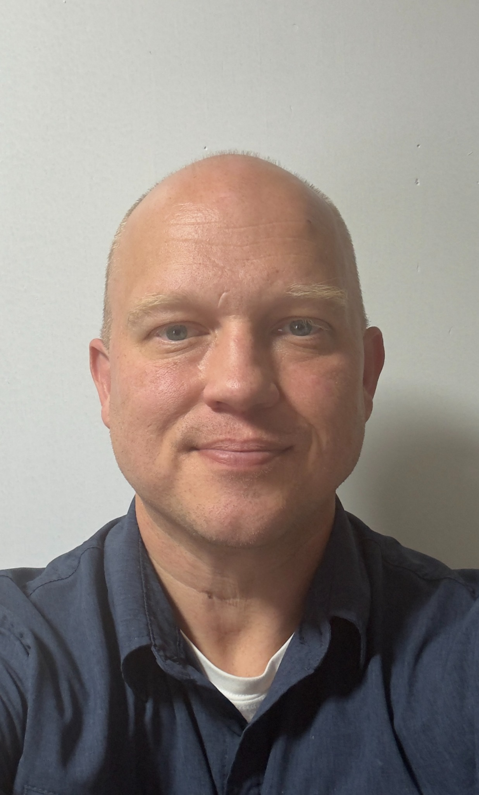

Applied education
BAS Information Technology
AAS Computer & Networking Technology
Pioneer Pacific College · Continuous study, January 2011–November 2014
Full Stack Software Engineering training through Coding Temple and freeCodeCamp.
INFRASTRUCTURE × ENGINEERING
I’m Joshua Randall. I build, secure, and improve the systems people depend on—and I’m studying the architectures that come next.
Compute, storage, networks, and the foundations of dependable operations.

ALBANY, OREGON / OSU ECAMPUS01 / THE PERSON BEHIND THE SYSTEMS
From the service desk to infrastructure architecture, business ownership, and enterprise escalation.
My work connects deep technical troubleshooting with the decisions that keep organizations moving: reliable operations, secure access, recoverable systems, clear documentation, and people who know what to do next.
Today, I’m bringing that practical foundation into Electrical & Computer Engineering at Oregon State University, with a long-term focus on computer architecture, high-performance computing, and quantum systems.
Follow the career path ↗02 / TECHNICAL RANGE
Explore the disciplines that connect my engineering work and technical leadership.
FOUNDATIONS THAT SCALE
Design, migration, troubleshooting, and recovery across on-premises and hybrid environments.
Applied through consulting, enterprise administration, and multi-site field engineering.
03 / CAREER
May – August 2026
Enterprise operations in Azure Government, with Tier III escalation and security-focused administration.
February 2025 – May 2026
Autonomous onsite and remote support across approximately 40–50 customer sites.
Independent practice established June 2019 · ongoing
Independent IT consulting under my own name. Phoenix Technology was a client—not my company.
February 2016 – June 2019
IT and operational technology support in Amazon fulfillment environments.
December 2014 – February 2016
Hands-on server, identity, virtualization, and multi-client administration.
March 2012 – December 2014
Approximately 20 large enterprise Exchange-to-Office 365 migrations.
July 1998 – March 2012
A foundation built across successive generations of enterprise technology.
BUILD / INSPECT / REPRODUCE
A recovery-readiness auditor with explicit assumptions, fictional sample data, and tests for the edge cases that matter.
04 / FEATURED ENGINEERING WORK
An OSU team project exploring technical feasibility, energy production, risk, and stakeholder communication.
05 / THE NEXT HORIZON
My next chapter connects systems engineering with the mathematics and architecture behind advanced computation.
Planned study includes Computer Science, Data Science, and Mathematics. Long-term interests include high-performance computing and quantum engineering.
06 / EDUCATION & CREDENTIALS
BAS Information Technology
AAS Computer & Networking Technology
Pioneer Pacific College · Continuous study, January 2011–November 2014
Full Stack Software Engineering training through Coding Temple and freeCodeCamp.
AZ-900 · AZ-104 · AZ-305 · AZ-400 · AZ-800/801 · MS-102 · MD-102 · MS-700 · SC-300
MCP · MCSA · MCSE · MCITP
CompTIA A+ · Network+ · Security+ · Linux+ · Server+
Cisco CCNA · VMware VCP · Lenovo · HP · LSCE Server / Storage
LET’S BUILD SOMETHING THAT MATTERS
Infrastructure, engineering, technical leadership, and the next challenging problem.